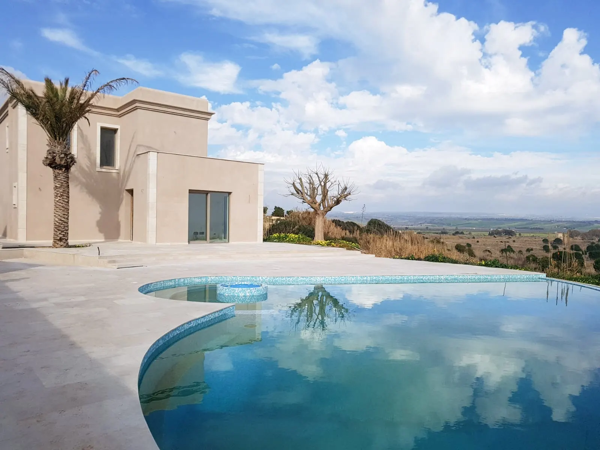

Resort a Mare (Mazzarò/Isola Bella): Concessioni Demaniali e Vincoli Costieri

In Breve
- 👉 La concessione demaniale non è un dettaglio: determina cosa puoi toccare e con quale titolo.
- 👉 Il cronoprogramma reale si gioca su Soprintendenza, paesaggistica e canoni: servono sequenze e non slogan.
- 👉 Le scelte tecniche devono reggere salsedine, manutenzione e stagionalità senza extra‑budget.
Aprire in ritardo un resort a mare tra Mazzarò e Isola Bella significa bruciare una stagione intera e immobilizzare capitale proprio quando il mercato è più redditizio. Qui il problema non è “fare un bel progetto”, ma governare un perimetro tecnico molto preciso: demanio marittimo, vincoli costieri, autorizzazioni paesaggistiche e logistica in un contesto turistico iper‑sensibile. Se il titolo non è chiaro o il progetto non è coerente con i vincoli, il cantiere si ferma e i costi si gonfiano. Un investitore da 1 Milione di Euro non può permettersi varianti improvvisate: serve una strategia che integra permessi, budget e manutenzione futura fin dal concept.
1. Demanio marittimo e vincoli costieri: cosa blocca davvero il progetto
La prima domanda è brutale: dove finisce il tuo perimetro e dove inizia il demanio. Senza un inquadramento tecnico preciso rischi di progettare su aree che richiedono una concessione o che sono soggette a prescrizioni aggiuntive. In questa fase lavoriamo con rilievi puntuali e verifiche documentali, non con supposizioni. I passaggi operativi sono concreti:
- rilievo plano‑altimetrico aggiornato con quota di battigia e confini catastali;
- verifica della concessione demaniale in essere (durata, subentro, pertinenze, prescrizioni);
- analisi del Piano di Utilizzo del Demanio Marittimo e dei vincoli paesaggistici locali;
- pre‑consulto con Soprintendenza per elementi esterni visibili dalla costa.
Questi step non sono burocrazia: servono a capire cosa è amovibile, cosa è permanente e quali opere richiedono un titolo separato. È qui che si protegge il ROI prima ancora di parlare di finiture.
2. Iter autorizzativo e cronoprogramma reale (non quello da brochure)
Nel costiero la sequenza delle pratiche è tutto. Se sbagli ordine, perdi mesi. L’errore tipico è partire dal layout e poi rincorrere i pareri. Noi lavoriamo al contrario: titoli e vincoli prima, design dopo. Servono elaborati coerenti e dettagliati, perché la Soprintendenza di Messina chiede tavole in scala 1:50 e dettagli 1:20 per elementi di facciata, più campionature materiali reali. In parallelo vanno impostati oneri concessori, canoni e eventuali fideiussioni legate alla concessione. I passaggi chiave sono:
- relazione paesaggistica con foto‑inserimenti e materiali definitivi;
- verifica preventiva dei requisiti urbanistici per cambio d’uso e volumetrie;
- calendarizzazione di conferenze di servizi solo quando il progetto è maturo;
- cronoprogramma con milestone autorizzative e SAL economici.
Un cronoprogramma serio include anche il “tempo morto” tra pareri e integrazioni. È il punto in cui molti investitori perdono la stagione: noi lo mettiamo a budget e lo gestiamo.
3. Logistica di cantiere in area turistica: accessi, orari e costi nascosti
La logistica a Taormina costa più del previsto perché l’accesso è frammentato e le finestre operative sono ridotte. I mezzi pesanti, per esempio, possono avere accesso solo in fasce mattutine (solitamente 06:00‑09:30), con scarichi frazionati e movimentazioni multiple. Questo impatta su noli, tempi e sicurezza. Le scelte operative che riducono il rischio sono chiare:
- piani di consegna a lotti con stoccaggi temporanei fuori area turistica;
- mezzi leggeri per l’ultimo miglio, anche se più costosi per unità;
- programmazione delle lavorazioni rumorose prima dell’alta stagione;
- coordinamento con hotel limitrofi per evitare stop imposti dal vicinato.
In un resort a mare la logistica non è un accessorio: è una voce di costo che può spostare il budget di progetto del 10‑15% se non controllata.
4. Scelte tecniche che proteggono il capitale nel tempo
L’ambiente marino è aggressivo: salsedine, umidità e vento accelerano il degrado. Qui la scelta di materiali e impianti non è “design”, è gestione del rischio. Se sbagli la stratigrafia o la finitura, ti ritrovi extra‑budget di manutenzione dopo due stagioni. In fase progettuale imponiamo soluzioni misurabili:
- acciai inox A4 o trattamenti anticorrosione per parapetti e fissaggi;
- intonaci traspiranti con cicli protettivi anti‑salsedine;
- impianti esterni con protezioni IP adeguate e accessi manutentivi;
- pavimentazioni antiscivolo certificate per aree piscina e percorsi costieri.
Questo è il punto dove un investimento intelligente si distingue: costi iniziali leggermente più alti, ma riduzione drastica di interventi correttivi e fermi operativi.